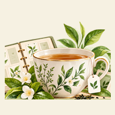

Na iPhone: v Safari ťuknite na tlačidlo Zdieľať (štvorček so šípkou) a vyberte „Pridať na plochu“. · Celá stránka Svet čajových vrecúšok

Zbierka do vrecka
Na iPhone: v Safari ťuknite na tlačidlo Zdieľať (štvorček so šípkou) a vyberte „Pridať na plochu“. · Celá stránka Svet čajových vrecúšok